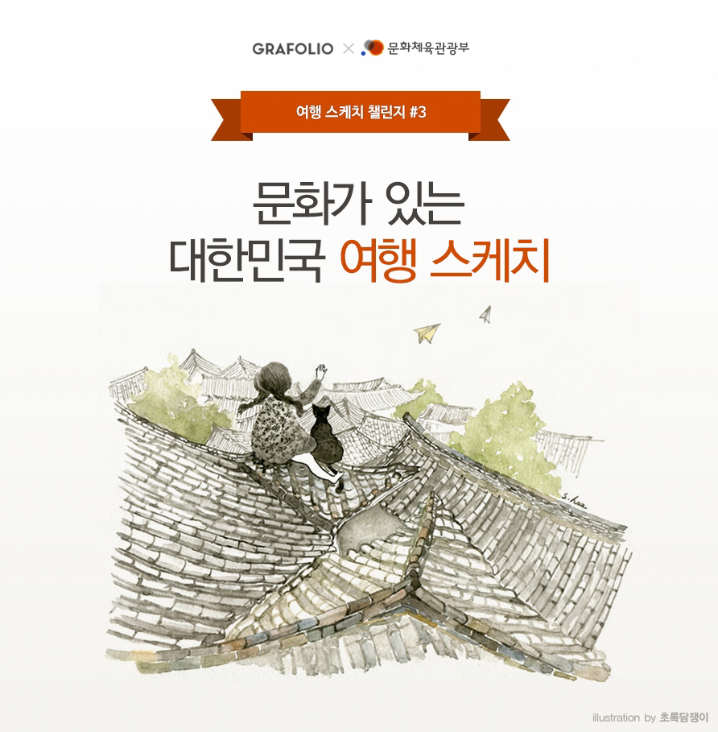

문화가 융성하고 예술이 살아있는 대한민국의 아름다운 여행지를 그려주세요.
당선작은 총 1,000만 원의 상금을 드리며, 문화체육관광부에서 진행하는 다양한 활동을 통해 작품을 소개 해 드립니다.
응모방법
주제 : 문화, 예술, 휴식이 있는 아름다운 대한민국 여행
- 주제와 예시를 참고하여 여행의 기 억과 느낌을 떠올려 주세요.
- 널리 알리고픈 아름다운 우리나라 문화와 여행지를 그림으로 표현해 주세요.
- 상단의 '챌린지 참여하기'를 클릭하 여 그림을 업로드해 주세요.
일정
- 접수 및 투표기간 : 9월 4일 ~ 10월 4일
- 심사기간 : 10월 5일 ~ 10월 7일
- 당선발표 : 10월 8일
심사기준
심사위원 점수 70% + 좋아요 점수 30%
- 제시된 주제가 적절히 나타난 작품
- 참신하고 창의적인 관점으로 표현한 작품
- 지역의 상징 또는 특색이 잘 표현된 작품
FAQ
- 1. 챌린지 접수와 동시에 투표가 진행 되나요?
- 접수와 동시에 공개 및 투표가 가능한 방식입니다.
- 2. 접수기간 이후 수정하려면 어떻게 해야 하나요?
- 작품이 잘 등록되었는지 반드시 확인해 주세요. 접수기간 이후에는 수정이 불가능 합니다.
- 3. 기존 업로드된 작품은 출품할 수 없나요?
- 기존에 정식 계약에 따른 출판이나 연 재가 된 작품, 또는 국내외 타 공모전에서 이미 수상한 작품을 제외하고는 기존 작품 도 응모할 수 있습니다.